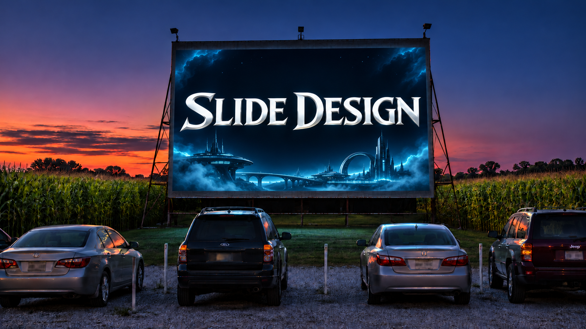

BEFORE THE FIRST SLIDE
Claude Design System
A saved rulebook for a brand's look. Claude reads it before it builds, so every slide follows the same rules.
01
Brand source
The colors to build from. Here, navy and gold from the USM logo.
02
Design system
Colors, type sizes and spacing saved as tokens, plus written rules and layout previews.
03
Slides
Each deck links to the system, so its colors and fonts show up in the editor and new slides match.
HOW THESE SLIDES ARE BUILT
Design System
Color
Navy
#002E5D
Gold
#F5A706
Ink
#0D1B2A
Muted
#4A5A6E
Line
#C9D1DB
Panel
#F3F5F8
Navy for words, gold for emphasis. Gold is never text on white.
Type
Aa
Inter
Title · 128
Title
Headline · 56
Headline
Body · 32
Body text
Caption · 22
Caption
One sans family. Left-aligned. Nothing smaller than 32px for reading.
Principles
High contrast
Every text pair is 6.5:1 or better, so it survives a washed-out projector.
Minimal
White space, square corners, no shadows. The gold bar is the only ornament.
Navy speaks, gold points
Navy carries the words; gold marks the one thing to look at.
One idea per slide
Headlines are sentences that state the takeaway.
Context
working directory
WHERE THE FILES LIVE
Local vs. cloud
Local
Files on your own computer
STRENGTHS
Files you own, in plain formats
Works offline in the classroom
Interactive slides work fully
TRADE-OFFS
Claude needs folder access each session
No click-to-edit slide editor
No share link
Cloud
Claude artifacts: design system, Slides deck
STRENGTHS
Click-to-edit slide editor
A share link that opens in any browser
A browsable design system overview
TRADE-OFFS
A second copy that can drift out of sync
Interactive demos can’t be clicked
Needs an internet connection
IN PRACTICE
Pick one master copy
Master copy
Local files or one artifact. Every change starts here.
Claude rebuilds
Edits copied back when you ask
Viewer
Browse and share. Rebuilt from the master.
Editor
Quick edits. Copied back to the master.
Change the master, then rebuild the views. Never the other way around.
PUBLISH THE SLIDES · STEP BY STEP
Create the GitHub repository
1
On github.com, open the + menu (upper right) and choose New repository.
2
Name it, for example my-slides, and set visibility to Public.
3
Turn Add README on, then click Create repository.
4
Go to Settings → Pages. Under Source, choose Deploy from a branch.
5
Pick branch main and folder /(root), then click Save.
6
Once GitHub is connected, Claude uploads the text files. Images go up by hand.
Live at https://<username>.github.io/my-slides/ about 10 minutes after Claude uploads. Free accounts need a public repository.
MCP · STEP BY STEP
Connect GitHub to Claude
1
On GitHub: Settings → Developer settings → Fine-grained tokens → Generate new token.
2
Choose Only select repositories (your repo), set Contents to Read and write, and an expiration under a year.
3
Click Generate token. Copy it into a password manager; GitHub shows it once.
4
In Claude, open Customize, search for github, and turn on the verified github plugin.
5
On the plugin’s Connectors tab, click Connect → Continue and choose No sign-in.
6
In the authorization header, enter Bearer + your token, then click Add.
Then, in a chat, turn on github under + → Connectors and ask Claude to upload the deck as index.html.
PUBLISH THE SLIDES · STEP BY STEP
Files you’ll need to upload by hand
Claude uploads
Text files, through the GitHub connector
The deck: .html
Styles and scripts: .css, .js
Notes and docs: .md, .txt
You upload
Binary files: the connector sends text only
Images: .png, .jpg, .gif
Logos and photos the deck uses
Other binaries: .pdf, fonts
1
On the repository page, click Add file → Upload files.
2
Drag in the images folder itself, so its paths match the deck.
3
Click Commit changes. Do this once; reupload only new images.